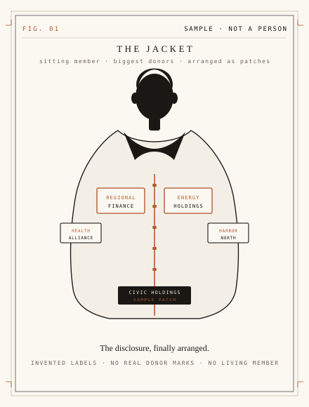

For the first time, you can see it.
Your government’s meetings, cross-referenced with its donors.
Campaign money is public. The meetings are public. People’s Lobby puts them on the same page. Not a PAC. Not a talk show. The filings.

The 30-second version
60B
historical records digitized at Ancestry.com — a career making a record people could actually read
100M
people who used that record. The same standard, pointed at government
The record
Meetings and donor filings. Both already public. Federal to local.
The last mile
Nobody put them on the same page. That is the product.
How it works
Three steps, from two public records to who was in the room.
-
01
Follow the money
Campaign reports. Who paid. Dollars in and dollars out — already filed, finally next to the calendar.
-
02
Follow it into the meeting
Citizen Portal is the data layer: the transcripts, the room, the week before the vote. The same names, in the same week.
-
03
Follow it to the vote
A timeline. Juxtaposition. Correlation, not a verdict. You can watch what sat next to what.
The jacket
See the jacket.
A designed picture of the disclosure — not a photograph, not a person. Invented patches stand in for donor categories. This is the last mile: the money, worn so a stranger can read it.
Concept
Committee week · sample
Banking committee · invented names
- Mon Sitting member (sample) Harbor North Capital
- Tue Harbor North Capital Regional Finance, client
- Wed Sitting member (sample) markup · sample bill
- Thu the vote juxtaposition, not a verdict
Why it matters
Same record. A harder question.
People’s Lobby is a white-label of Citizen Portal. Same government record. Different question: the rise of corporate power in American government, and the lessening of everyday people’s influence. The filings can hold that question without becoming a PAC or a talk show.
Why now
The last mile was putting them together.
The meeting record already exists — Citizen Portal, federal to local. The donor record already exists. Money is public. Meetings are public. What was missing was one page that follows the money into the room, and from the room to the vote.
Team
Built by the person who built Ancestry.com.
60 billion records. 100 million people who could actually read them.
Ancestry for families. Citizen Portal for the government record. People’s Lobby for the last mile: meetings, cross-referenced with donors.
Paul Allen
Co-founder, Ancestry.com
Paul Allen, co-founder of Ancestry.com. That prior scoreboard is the only one this page will print: 60 billion historical records, 100 million users. The same problem — making a record readable — pointed at the government record, then at who was in the room.
What we will stand on
A point of view, held to a public record.
-
01
The record is public
Meetings, filings, campaign reports — already required. The work is to make them readable on one page.
-
02
Influence should be visible
If the money and the meeting sit in the same week, a person should be able to see both.
-
03
Not a PAC
No independent expenditure. Transparency, not a machine that spends.
-
04
Not a party
The filings do not put on a costume. The page does not either.
-
05
Not a talk show
No host. No segment. A briefing a stranger can finish in one sitting.
-
06
Timelines, not verdicts
We show what sat next to what. We do not claim a donation caused a vote.
The page
Now you can see it.
Now you can watch. Two public records. One page. The filings.